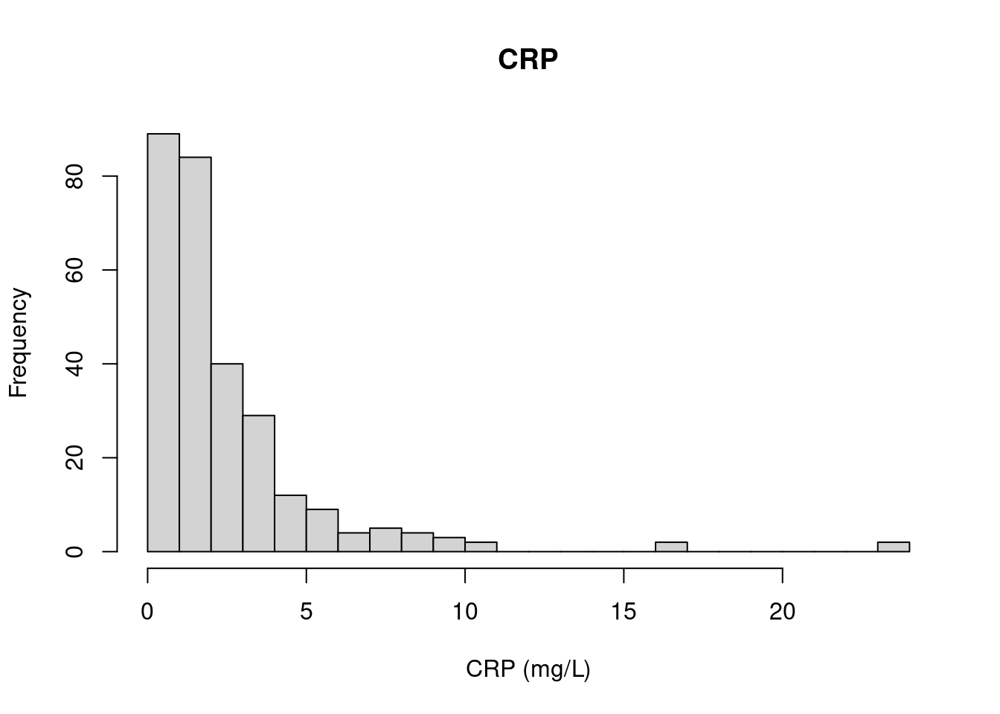
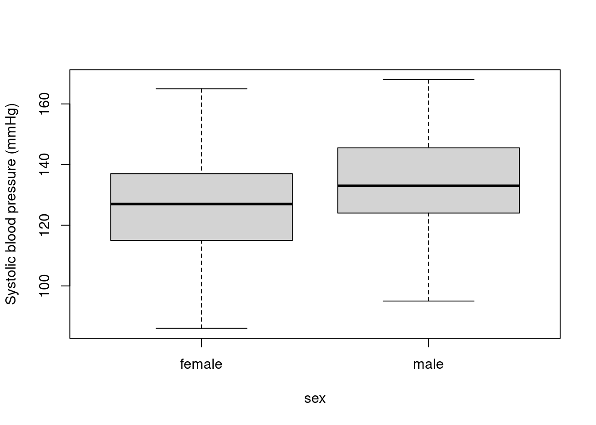
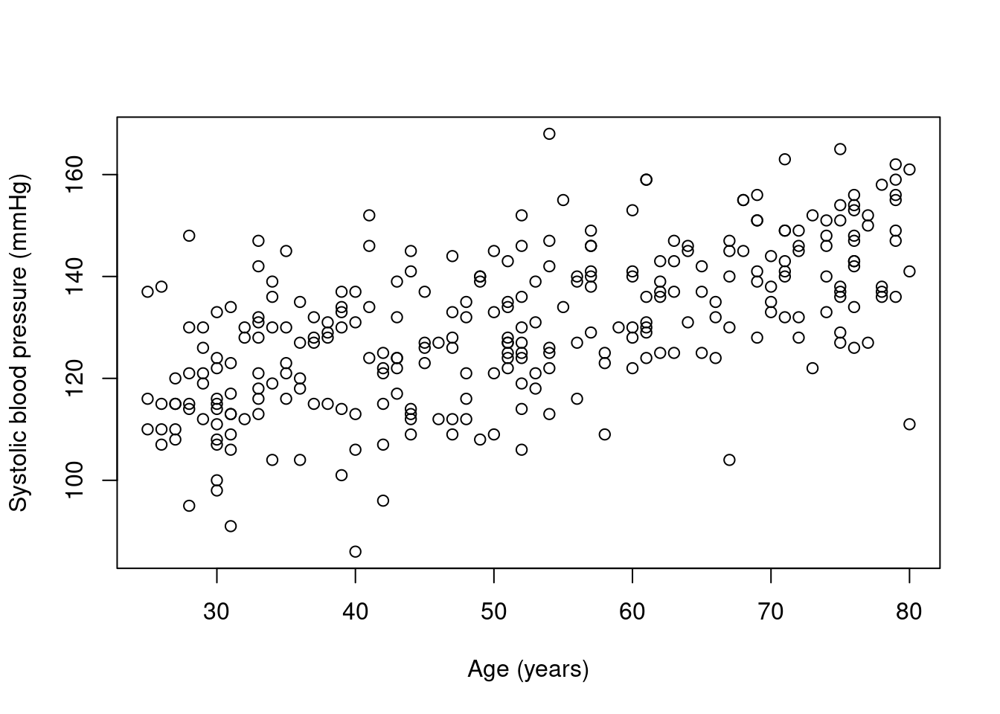
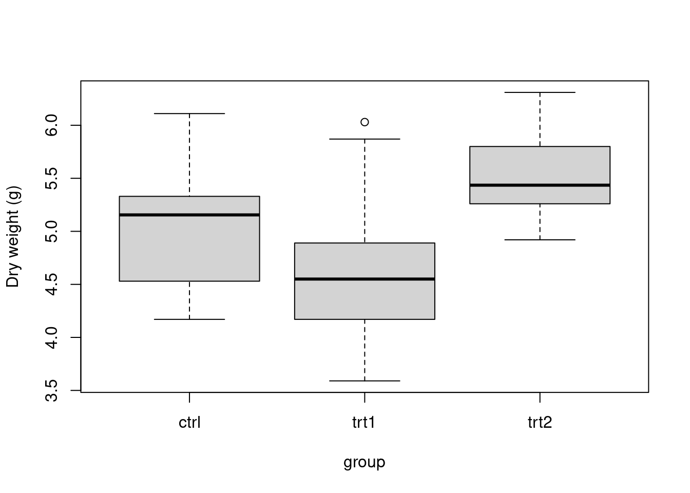

Basic statistics
1 Introduction
In this lab you will describe, relate and compare data with R:
- describe a variable with its centre (mean, median) and spread (SD, IQR),
- find data-entry errors and handle missing values,
- summarise per group,
- relate two variables with Pearson and Spearman correlation,
- compare two groups with a t-test or a Wilcoxon test.
You’ll make a few quick plots with hist(), boxplot() and plot(). You’ll learn much more about plotting on Thursday.
As always: predict first, then run. If the output surprises you, find out why. Click the key to reveal example code. Keep your code and notes in your R Markdown learning journal.
2 A patient study
This function simulates a small clinical study. You learned to write functions this morning: read it and see if you can follow what it does. You don’t need to understand every line.
make_patients <- function(n = 300, na_frac = 0.05, seed = 42) {
set.seed(seed)
sex <- sample(c("female", "male"), n, replace = TRUE)
age <- round(runif(n, 25, 80))
smoker <- sample(c(TRUE, FALSE), n, replace = TRUE, prob = c(0.25, 0.75))
bmi <- round(rnorm(n, mean = ifelse(sex == "male", 27, 25.5), sd = 4), 1)
# systolic blood pressure (mmHg) rises with age, BMI and smoking
sbp <- round(95 + 0.6 * age + 0.8 * (bmi - 25) + 6 * smoker +
ifelse(sex == "male", 4, 0) + rnorm(n, 0, 10))
# C-reactive protein (mg/L), an inflammation marker: skewed, higher in smokers
crp <- round(rlnorm(n, meanlog = log(1.5) + 0.4 * smoker, sdlog = 0.9), 1)
bmi[17] <- 245 # a data-entry error
sbp[sample(n, round(n * na_frac))] <- NA # missing measurements
crp[sample(n, round(n * na_frac))] <- NA
data.frame(id = sprintf("P%03d", 1:n), sex, age, smoker, bmi, sbp, crp)
}
patients <- make_patients()| Column | Meaning |
|---|---|
sex, age, smoker |
patient information |
bmi |
body mass index (kg/m²) |
sbp |
systolic blood pressure (mmHg) |
crp |
C-reactive protein (mg/L), a marker of inflammation |
- How many patients and variables are there? What type is each column? Get a summary of every column.
dim(patients)
str(patients)
summary(patients)## [1] 300 7
## 'data.frame': 300 obs. of 7 variables:
## $ id : chr "P001" "P002" "P003" "P004" ...
## $ sex : chr "female" "female" "female" "female" ...
## $ age : num 52 49 28 43 73 76 47 34 43 42 ...
## $ smoker: logi FALSE FALSE TRUE FALSE FALSE FALSE ...
## $ bmi : num 20.3 24.5 26.2 23.9 27.4 25.7 33.5 29.9 37.4 23.8 ...
## $ sbp : num 106 NA 115 122 122 148 144 136 132 125 ...
## $ crp : num 1.8 2.2 NA 2.6 2.2 2.5 3.5 6.7 0.6 5.8 ...
## id sex age smoker
## Length:300 Length:300 Min. :25.00 Mode :logical
## Class :character Class :character 1st Qu.:37.00 FALSE:227
## Mode :character Mode :character Median :51.00 TRUE :73
## Mean :51.45
## 3rd Qu.:66.00
## Max. :80.00
##
## bmi sbp crp
## Min. : 13.40 Min. : 86.0 Min. : 0.200
## 1st Qu.: 23.30 1st Qu.:121.0 1st Qu.: 0.900
## Median : 25.90 Median :130.0 Median : 1.600
## Mean : 26.71 Mean :130.5 Mean : 2.527
## 3rd Qu.: 28.80 3rd Qu.:141.0 3rd Qu.: 3.100
## Max. :245.00 Max. :168.0 Max. :23.900
## NA's :15 NA's :153 Describe
3.1 Centre
- Calculate the mean systolic blood pressure. Why do you get
NA? How many values are missing in each column? Then calculate the mean again, ignoring the missing values.
mean(patients$sbp)
colSums(is.na(patients))
mean(patients$sbp, na.rm = TRUE)## [1] NA
## id sex age smoker bmi sbp crp
## 0 0 0 0 0 15 15
## [1] 130.5439- Calculate the mean and the median BMI. Why are they different? Find the strange value with
max()andwhich.max(). A BMI of 245 is impossible: it was probably meant to be 24.5. Correct it and calculate the mean again.
mean(patients$bmi)
median(patients$bmi)
max(patients$bmi)
patients[which.max(patients$bmi), ]
patients$bmi[patients$bmi == 245] <- 24.5
mean(patients$bmi)## [1] 26.71467
## [1] 25.9
## [1] 245
## id sex age smoker bmi sbp crp
## 17 P017 male 41 FALSE 245 124 1.6
## [1] 25.97967- Look at the distribution of CRP with
hist(). Is it symmetric? Calculate its mean and median. Which one better describes a “typical” patient?
hist(patients$crp, breaks = 30, main = "CRP", xlab = "CRP (mg/L)")
mean(patients$crp, na.rm = TRUE)
median(patients$crp, na.rm = TRUE) # skewed to the right: the median is more typical## [1] 2.527368
## [1] 1.6
3.2 Spread
- For systolic blood pressure, calculate the range, the quartiles, the IQR, the standard deviation and the variance. What is the unit of each?
range(patients$sbp, na.rm = TRUE)
quantile(patients$sbp, na.rm = TRUE)
IQR(patients$sbp, na.rm = TRUE)
sd(patients$sbp, na.rm = TRUE) # mmHg
var(patients$sbp, na.rm = TRUE) # mmHg²## [1] 86 168
## 0% 25% 50% 75% 100%
## 86 121 130 141 168
## [1] 20
## [1] 14.99539
## [1] 224.8616- Write a function
cv()that returns the coefficient of variation (SD divided by the mean, in %) of a vector, ignoring missing values. Which is more variable relative to its mean: blood pressure or CRP?
cv <- function(x) {
100 * sd(x, na.rm = TRUE) / mean(x, na.rm = TRUE)
}
cv(patients$sbp)
cv(patients$crp)## [1] 11.48686
## [1] 116.2563.3 Per group
- How many patients are there of each sex, and how many smokers in each sex? What fraction of women and men smoke?
table(patients$sex)
table(patients$sex, patients$smoker)
prop.table(table(patients$sex, patients$smoker), margin = 1) # fractions per row##
## female male
## 144 156
##
## FALSE TRUE
## female 107 37
## male 120 36
##
## FALSE TRUE
## female 0.7430556 0.2569444
## male 0.7692308 0.2307692- Calculate the mean and SD of systolic blood pressure for men and women, first with
tapply(), then withgroup_by()andsummarise(). Then show it with a boxplot.
tapply(patients$sbp, patients$sex, mean, na.rm = TRUE)
tapply(patients$sbp, patients$sex, sd, na.rm = TRUE)
library(dplyr)
patients |>
group_by(sex) |>
summarise(n = n(),
mean_sbp = mean(sbp, na.rm = TRUE),
sd_sbp = sd(sbp, na.rm = TRUE))
boxplot(sbp ~ sex, data = patients, ylab = "Systolic blood pressure (mmHg)")## female male
## 126.9624 133.6776
## female male
## 14.37770 14.86701
## # A tibble: 2 × 4
## sex n mean_sbp sd_sbp
## <chr> <int> <dbl> <dbl>
## 1 female 144 127. 14.4
## 2 male 156 134. 14.9
4 Relate
- Does blood pressure rise with age? Plot
sbpagainstage, then calculate the Pearson and Spearman correlations. Remember the missing values (use = "complete.obs").
plot(patients$age, patients$sbp, xlab = "Age (years)", ylab = "Systolic blood pressure (mmHg)")
cor(patients$age, patients$sbp, use = "complete.obs")
cor(patients$age, patients$sbp, use = "complete.obs", method = "spearman")## [1] 0.6034155
## [1] 0.6082837
- Calculate all correlations between
age,bmi,sbpandcrpat once by givingcor()a data frame. Which two variables are most strongly correlated? Which are not correlated at all?
Hint: use = "pairwise.complete.obs" uses all available values for each pair.
round(cor(patients[, c("age", "bmi", "sbp", "crp")], use = "pairwise.complete.obs"), 2)## age bmi sbp crp
## age 1.00 0.00 0.60 0.04
## bmi 0.00 1.00 0.27 0.02
## sbp 0.60 0.27 1.00 0.07
## crp 0.04 0.02 0.07 1.00- Is the correlation between age and blood pressure statistically significant? Use
cor.test(). The result is a list: get the p-value and the 95 % confidence interval of the correlation.
res <- cor.test(patients$age, patients$sbp)
res$p.value
res$conf.int## [1] 1.177489e-29
## [1] 0.5239629 0.6724572
## attr(,"conf.level")
## [1] 0.955 Compare
- Do smokers have higher blood pressure? Calculate the mean
sbpfor smokers and non-smokers, and their difference. Then test it witht.test(). Write one sentence for your journal reporting both the difference and the p-value.
sbp_smokers <- patients$sbp[patients$smoker]
sbp_non <- patients$sbp[!patients$smoker]
mean(sbp_smokers, na.rm = TRUE) - mean(sbp_non, na.rm = TRUE)
t.test(sbp_smokers, sbp_non)
# e.g. "Smokers had a 7.3 mmHg higher mean systolic blood pressure (p = 0.0002)."## [1] 7.26247
##
## Welch Two Sample t-test
##
## data: sbp_smokers and sbp_non
## t = 3.8508, df = 128.9, p-value = 0.0001846
## alternative hypothesis: true difference in means is not equal to 0
## 95 percent confidence interval:
## 3.530969 10.993970
## sample estimates:
## mean of x mean of y
## 136.0735 128.8111- CRP is skewed, so a t-test isn’t ideal. Compare CRP between smokers and non-smokers with
wilcox.test(), and compare the medians of the two groups.
crp_smokers <- patients$crp[patients$smoker]
crp_non <- patients$crp[!patients$smoker]
median(crp_smokers, na.rm = TRUE)
median(crp_non, na.rm = TRUE)
wilcox.test(crp_smokers, crp_non)$p.value## [1] 2
## [1] 1.5
## [1] 0.002086352- R’s built-in
PlantGrowthdata set has the dry weight of plants grown in a control condition (ctrl) and two treatments (trt1,trt2). Calculate the mean weight per group and make a boxplot. Then compare each treatment with the control using a t-test. Which treatment makes a difference?
tapply(PlantGrowth$weight, PlantGrowth$group, mean)
boxplot(weight ~ group, data = PlantGrowth, ylab = "Dry weight (g)")
ctrl <- PlantGrowth$weight[PlantGrowth$group == "ctrl"]
trt1 <- PlantGrowth$weight[PlantGrowth$group == "trt1"]
trt2 <- PlantGrowth$weight[PlantGrowth$group == "trt2"]
t.test(trt1, ctrl)$p.value # no clear difference
t.test(trt2, ctrl)$p.value # trt2 plants are heavier## ctrl trt1 trt2
## 5.032 4.661 5.526
## [1] 0.2503825
## [1] 0.04789926
- Think about it. You tested two treatments against the same control. If you tested 100 treatments that did nothing at all, how many would you expect to have p < 0.05 by chance? Try it: use a
forloop to run 100 t-tests on two groups of random numbers from the same distribution, and count the “significant” ones.
set.seed(4)
p_values <- numeric(100)
for (i in 1:100) {
a <- rnorm(10)
b <- rnorm(10) # same distribution: no real difference
p_values[i] <- t.test(a, b)$p.value
}
sum(p_values < 0.05) # about 5 in 100 (1 in 20) are "significant" by chance alone## [1] 66 Cheatsheet
| Task | R |
|---|---|
| Centre | mean(x, na.rm = TRUE), median(x, na.rm = TRUE) |
| Spread | sd(), var(), range(), quantile(), IQR() |
| Count categories | table(), prop.table() |
| Per group | tapply(x, group, mean), group_by() + summarise() |
| Correlation | cor(x, y, use = "complete.obs", method = "pearson" / "spearman") |
| Test a correlation | cor.test(x, y) |
| Compare two groups | t.test(x, y), wilcox.test(x, y), paired = TRUE for the same subjects |
| Quick plots | hist(), boxplot(y ~ group), plot(x, y) |